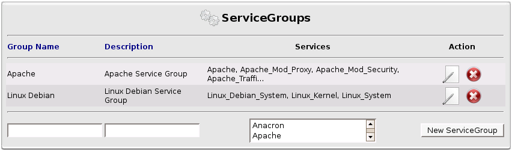
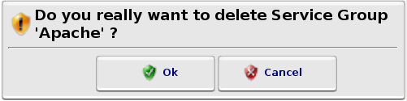
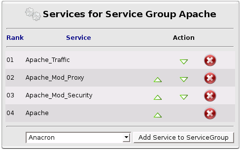

ServiceGroups
ServiceGroups
Here you can configure your ServiceGroups.
One ServiceGroup is a group of Services used to add many Services to a Device in one time.
Here you can:
- create a new ServiceGroup
 edit Services list of a ServiceGroup
edit Services list of a ServiceGroup remove one ServiceGroup
remove one ServiceGroup

ServiceGroups List
Every time you will remove a ServiceGroup, a dialog window will ask you to confirm.

Dialog Window Confirmation
 ServiceGroup Services
ServiceGroup Services

ServiceGroup Services Box